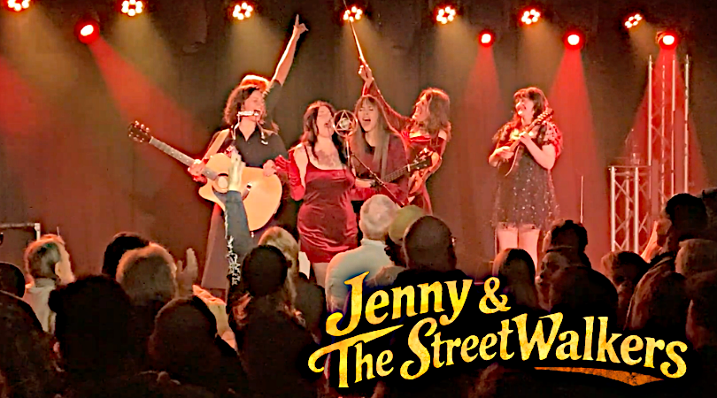

Festivals · Venues · Live events
Booking
Big harmonies. Bold personalities.
A show that brings the crowd in.
A progressive bluegrass and roots band based in Columbus, Ohio, with three-part harmonies and twin fiddles.

Jenny & The StreetWalkers are an edgy, harmony driven progressive bluegrass and roots powerhouse based in Columbus, Ohio. Built around razor tight three-part vocals, hard driving rhythms, twin fiddles, bold arrangements, slinky grooves, crowd shoutbacks, and the occasional tender moment, the band has quickly earned a reputation as one of Columbus’s fastest rising live acts, turning rooms into parties wherever they play.
Their momentum accelerated after a breakout festival debut that drew campers from their tents at the first a cappela chord, and kept them there asking for more. Since then, The StreetWalkers have brought their high energy show to stages including Newport Music Hall, Hookahville, Grassfire, ComFest, Snowshoe Mountain, Woodlands Tavern, Todd’s Fork Festival, and Midnight Jam.
A true genre-bending band, Jenny & The StreetWalkers pull from hard driving bluegrass, country, folk, sea shanties, dark gypsy cabaret, and a touch of circus noir. Haunting harmonies give way to stomping rhythms, punchy grooves, and full-throttle dance floor energy in the span of a single set.
Fronted by Jenny Walker (whose name is indeed a wink), The StreetWalkers combine precision musicianship with big personalities and a live chemistry that is impossible to fake. Playful, theatrical, and a little dangerous around the edges, The StreetWalkers are completely committed to pulling the crowd into the show.
The result is a performance that feels both commanding and communal, big enough for festival stages, loose enough to feel spontaneous, and intimate enough to make the back row feel like the front row. Jenny & The StreetWalkers do not just play for an audience. They build the night with them.
Jenny Walker · Breezy Caldwell · Lea Anne Kangas · Kasey Moore · James Wooster
Start the conversation
Book the Band
Tell us about your venue, festival, or event. Jenny will follow up with availability and booking details.
For presenters & production teams
Press kit
A band overview, selected past stages, lineup and booking contact, followed by the stage plot and rider.
Download press kit · PDF{kind=link}
Selected past stages
Newport Music Hall · Hookahville · Grassfire · ComFest · Snowshoe Mountain · Woodlands Tavern · Todd’s Fork Festival · Midnight Jam